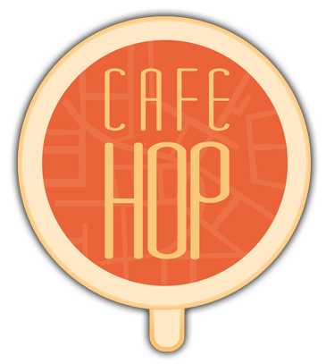

About CafeHop KL

CafeHop KL is a mapping project mapping independent cafes around Kuala Lumpur. We have made this site and also printed copies to distribute among 28 cafes that have supported this project.
Cafes are chosen based on a combination of good coffee, good food, good service and/or good vibes in general. So, what are you waiting for? Start cafe hopping, pop by these novel cafes and find one that suits you. We hope you find a nice place and have a great coffee.
The CafeHop KL Team
-
Joachim Leong After visiting as many cafes possible around Malaysia, Joachim thought why not a cafe map for KL? If he was a coffee, he would be a macchiato just because itʼs not mainstream.
-
Jamie Lim Bubbly, sporty Jamie is our wonder girl for graphics in CafeHop KL. If she isnʼt behind the computer, you can find throwing a frisbee around KL. If Jamie was a coffee, she would be a latte - she ainʼt latte-ing you down!
-
Sher Minn Chong Sher Minn, our webpage designer on the other side of the Atlantic but soon to return to Malaysia to conquer one webpage at a time! If Sher Minn was a coffee , she would be ʻcham coffeeʼ (tea mixed with local coffee) - drink hot coffee, drink hot tea, burn your lips, and youʼll remember her!
- Shean Tan Shean is our film-loving, film-camera trotting photographer taking awesome hipster shots of cafes, latte art and coffee all around KL town. If Shean was a coffee, she would be an ice drip coffee because sheʼs deliberate, patient and well-measured.